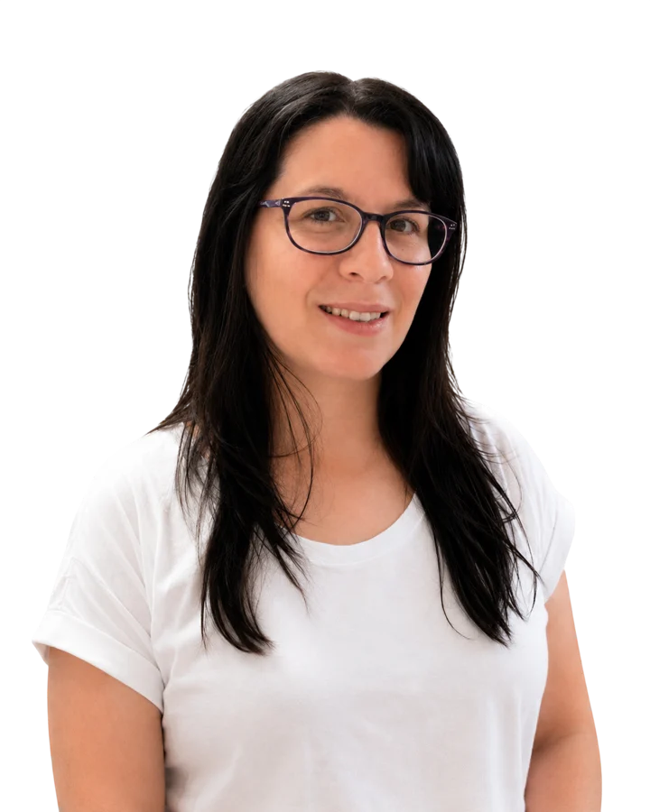

Daiana
Beltrán
Analista de datos e inteligencia de negocios
Antes de abrir un archivo pregunto qué decisión hay que tomar. Después reviso que el dato sea confiable, lo modelo con SQL, Python y Power BI, y cierro con una recomendación que se pueda usar.

Neuquén, Argentina. Remoto o híbrido.Proyecto 01 · Energía y Oil & Gas
Vaca Muerta: qué tan rápido cae un pozo
Un análisis de producción con datos públicos, desde el archivo crudo hasta una conclusión de negocio. Hecho en Python y presentado en Power BI y en un dashboard web.
Cuando un pozo llega a su pico de producción, ¿qué tan rápido cae y cuánto le queda productivo un año después?
Del dato crudo al universo de análisis
Producción mensual por pozo publicada en datos.gob.ar. Filtré la formación Vaca Muerta y los pozos iniciados desde 2016, para comparar pozos con tecnología similar.
Parado no es lo mismo que agotado
Muchas caídas del 99% eran pozos parados. Los separé con el tiempo efectivo de producción: el 12,1% estaba parado al cierre. Sin esa revisión, el declino se exagera.
Proyección con el modelo de Arps
Usé el modelo estándar de la industria. Sin acotar su parámetro b, el pronóstico a 15 años promete un 16% más de producción. Lo validé con backtesting.
Qué significa para el negocio
Si un pozo pierde cerca del 70% en su primer año, sostener la producción exige perforar todo el tiempo. Eso explica la demanda constante de servicios en la cuenca.
Lo que estoy construyendo ahora
Capa SQL para Vaca Muerta
Paso la limpieza y el filtrado del dataset crudo, de unos 140 MB, a SQL. Así el proyecto muestra el circuito completo: SQL para extraer y limpiar, Python para analizar.
Margen por contrato
Un caso de control de gestión para una empresa de servicios industriales: qué contratos ganan plata y cuáles la pierden, con SQL y Power BI.
Primero la pregunta, después el dato
Busco posiciones de Data Analyst, BI Analyst o analista de control de gestión. Me interesa el trabajo donde un número termina en una decisión.
Vengo de la psicología clínica: años de entrevistar, relevar necesidades y explicar conclusiones complejas en simple. Hoy lo aplico a entender qué necesita quien va a usar un análisis.
- Entender el problemaQué hay que resolver, quién decide con ese análisis y cómo sería una buena respuesta.
- Auditar antes de graficarUn tablero prolijo sobre datos mal cargados lleva a malas decisiones. Reviso, limpio y modelo antes de medir.
- Cerrar con una recomendaciónExplicada en lenguaje simple, para quien no es técnico.
- Datos
- SQL Server, MySQL, Power Query
- Análisis
- Python (pandas, SciPy), Excel
- Visualización
- Power BI, DAX
Formación y experiencia
- 2026, en curso
Data Science for Business
Formación onlinePython, estadística aplicada y Machine Learning aplicados a problemas de negocio.
- 2026
Smart Excel
SMARTpro AcademyMás de 60 horas: fórmulas, tablas dinámicas, funciones de búsqueda, macros y tableros.
- 2026
Comunicación profesional y oratoria
OPI 2.020 horas sobre cómo estructurar un mensaje y presentar ideas.
- 2025 a la actualidad
Psicóloga clínica, práctica independiente
NeuquénRelevamiento de necesidades, análisis de casos, seguimiento de procesos y comunicación clara con personas de perfiles muy distintos.
- Abril 2024 a febrero 2025
Data Analytics Bootcamp
Unicorn Academy300 horas en 8 meses: SQL, Power BI, Python, ETL y fundamentos de Azure.
- 2019 a 2024
Licenciatura en Psicología
Universidad de Flores - 2016 a 2018
Contador Público, dos años cursados
Universidad Nacional del ComahueContabilidad, finanzas, economía y matemática.
Hablemos
Si buscás a alguien que conecte los datos con las decisiones del negocio, escribime.
daianabeltran@gmail.com